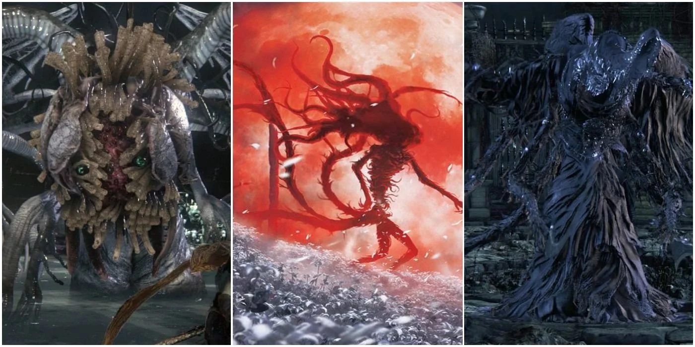
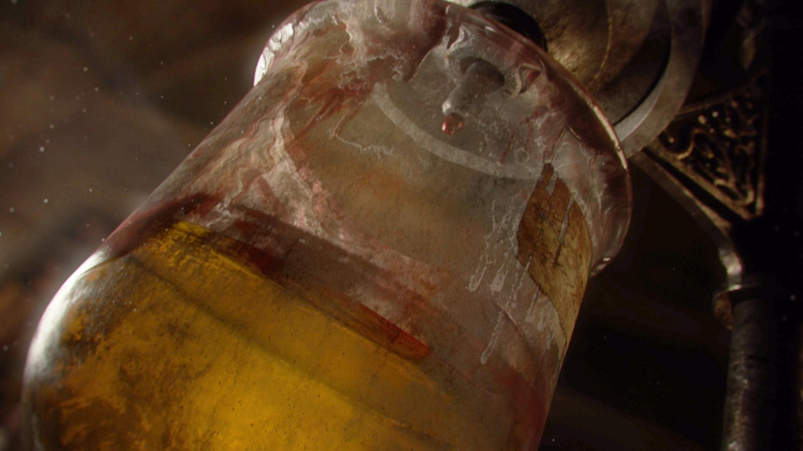

Above is the isolated school of Brygenwerth lead by Master Willem. Willem is obssesed with finding the truth and pushing the limits of humanity. Through out the game he is often regarded as Master or Provost Willem even by thoughs who stepped away from his tutaliged as they still have nothing but respect for there former mentor. It was when Master Willem taught over Byrgenwerth that a group of Byrgenwerth scholars dicoverd a labyrinth of tombs under the city of Yharnam called the Pthurmarian Catacombs or the Chalice dungeons. The Pthurmarians where a race of superhumnoid beings who discoverd the Eldrich Truth, this truth is a state of excistence that can only be reached by expanding and evolving onces mind. It was within these dungeons that the Byrgenwerth scholars dicoverd the Pthurmarians have ascended into god like beings known as The Great Ones.
The Great Ones are extremely powerful, multi-dimensional beings that can exist across several planes of existence. Although they are grotesce in appearence The Great Ones were once humanoid in nature and the price for evolving takes a heavy toll on their appearences. They have often been described as gods, and play a mysterious yet crucial role in the game's plot, as well as itsoverall lore. Along with the evidence of ascended Great Ones, the Byrgenwerth scholars dicoverd the left over corpses and of Great Onces and the blood or old blood they continued to produce after death. It is with the old blood that the story continues.
Early on through injections and consumption of the Old Blood, the scholars discoverd that the blood could heal any injury; cure any disease, and overall improve the lifelihood of any one who used it. It was Laurence one of Master Willem's brightest and most trusted students who came to the conclusion that Byrgenwerth should distribute the blood to the near by city of Yharnam with hopes that enough consumption of the healing blood will allow a communion with the Great Ones. Yet, Master Willem feared the Old Blood and he looked to beings from higher plains for guidence, and sought to line his brain with eyes in order to elevate his thoughts. Impatient with Master Willem's method of communion with the Great Ones, Laurence and a group of scholars left the Byrgenwerth and started the Healing Church of Yharnam.